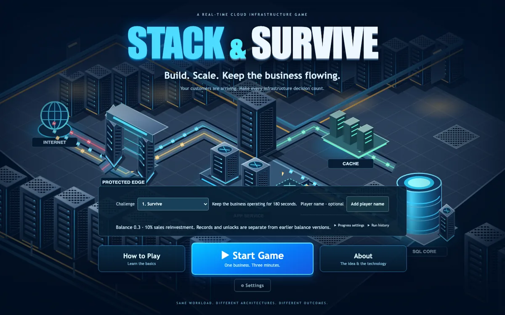
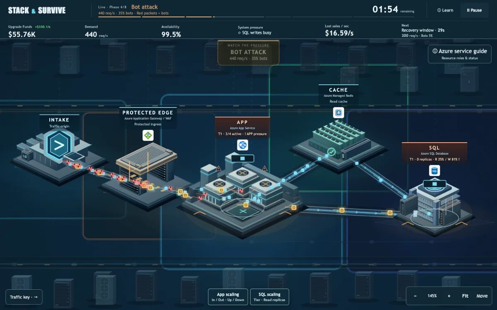
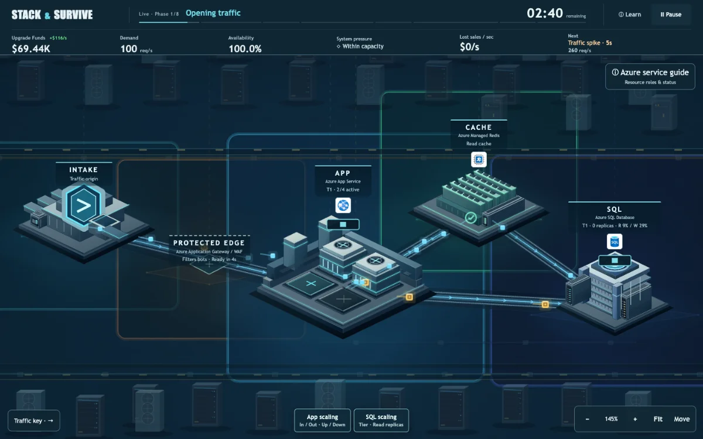
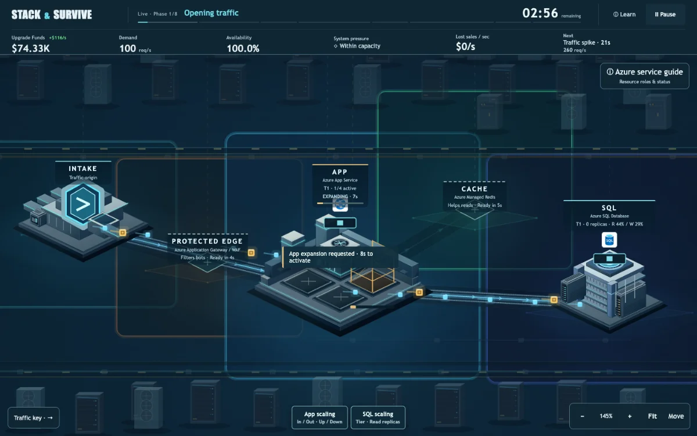
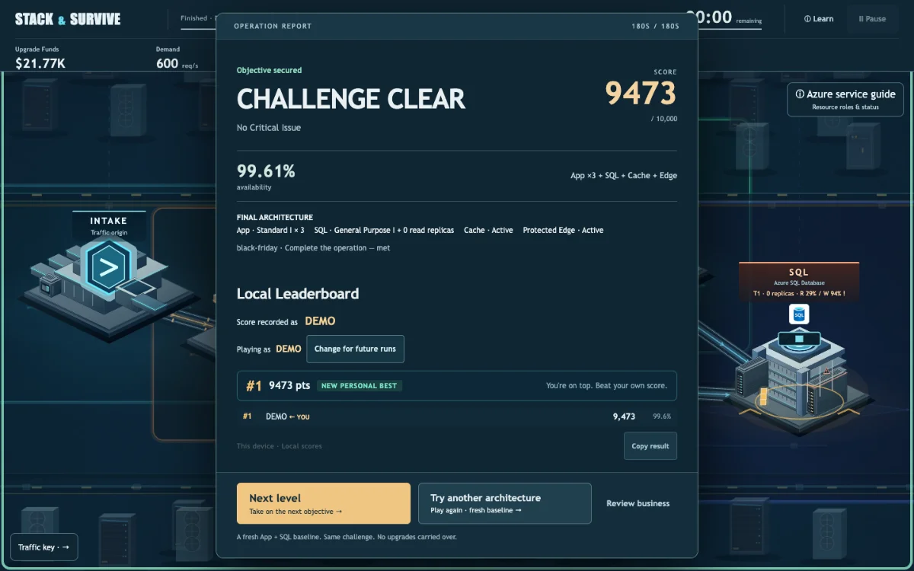
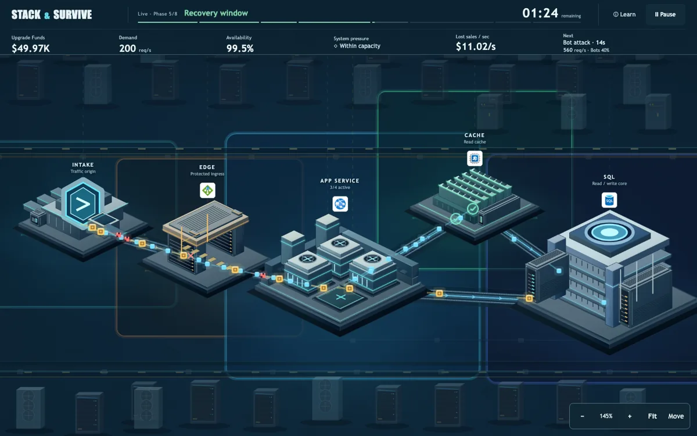

01 / WHY I STARTED
고객지원 현장에서
한 가지 질문이
생겼습니다.
고객지원을 하며
Microsoft Learn을 자주 참고합니다.
처음 만나는 App · Cache · Database · Edge.
각 개념이 어떻게 연결되는지
쉽지 않을 수 있다고 느꼈습니다.
고객지원 경험에서 나온 개인적인 관찰입니다.

02 / FROM DOCUMENT TO EXPERIENCE
읽는 대신,
직접 선택하게 하면
어떨까?
공식 문서를 대체하는 것이 아니라,
문서를 이해하기 위한 직관을 먼저.
선택 → 결과 → 다시 선택
교육용 클라우드 전략 게임
Stack & Survive

03 / CORE LOOP
예고를 보고,
먼저 준비하세요.
- 트래픽 변화를 확인
- App · Cache · Edge 선택
- 건설과 활성화까지 기다림
- 가용성 · 손실 · 결과 확인
180초 · 8 traffic phases · 3 sequential objectives
결과를 보며 개념과 행동을 연결합니다.
$75K는 게임상 사업 가치이며 실제 Azure 가격이 아닙니다.


04 / ARCHITECTURE TRADE-OFFS
같은 워크로드.
다른 선택, 다른 결과.
- App
- 처리량 증가 · 활성화 지연 + 운영비
- Cache
- 읽기 요청 완화 · SQL write는 그대로
- Protected Edge
- 봇 필터링 · 정상 고객 오탐 가능
정답 하나를 외우는 게임이 아닙니다.
Same workload. Different architectures. Different outcomes.
05 / LEARN BY RETRYING
결과를 보고,
다른 전략으로 다시.
결과를 보면 다음 질문이 생깁니다.
- “App을 더 일찍 늘렸다면?”
- “Cache를 먼저 설치했다면?”
- “Edge 없이 버틸 수 있을까?”
다음 플레이가 또 다른 실험이 됩니다.
Score · Availability · Business impact
Player Name · Leaderboard · Play Again

06 / ENGINEERING
게임의 결과는
하나의 결정론적 엔진이
계산합니다.
서버는 클라이언트가 보낸
점수를 믿지 않습니다.
플레이어의 행동 기록을 다시 실행해
점수를 서버에서 계산합니다.
닉네임 인증·완전한 anti-cheat 시스템은 아닙니다.
플레이 중 실제 Azure 리소스를 생성하지 않습니다.
브라우저와 서버가 같은 엔진 사용
행동 기록 → 검증 → 동일 엔진으로 재실행
07 / LEARNING POSITION
공식 문서를 대체하는
것이 아니라,
이해를 위한 직관을 먼저.
문서 이전의 직관
+ 문서 이후의 질문
Learn the concept
by experiencing the consequence.
실제 학습 효과는 별도 사용자 검증이 필요한 가설입니다.
↓
↓
08 / FROM DOCUMENT TO EXPERIENCE
개념을 읽는 것에서
선택의 결과를
경험하는 것으로.
Stack & Survive
Build. Scale. Keep the business flowing.
Same workload. Different architectures. Different outcomes.
당신이라면 다음 트래픽 전에
무엇을 바꾸시겠습니까?
yeongseon.github.io/stack-and-survive/
